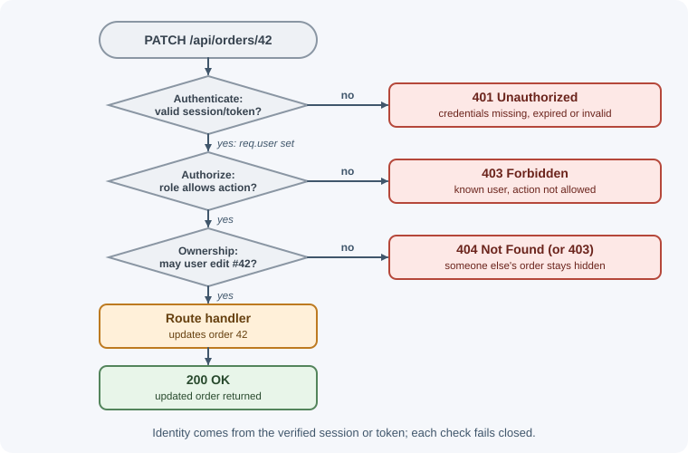
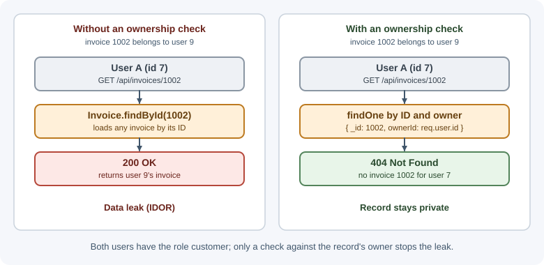

Authentication and Authorization¶
Authentication asks, "Who are you?" Authorization asks, "What are you allowed to do?" A backend must answer both questions on every protected request: first establish the identity behind the request, then decide whether that identity may perform the requested action on the requested resource.
Why it matters¶
Many serious web application breaches are not exotic attacks; they are missing or incorrect access checks. Broken access control is ranked first in the OWASP Top 10 (2021), which found some form of it in 94% of the applications tested. A signed-in user changes an ID in a URL and reads someone else's invoice. An API accepts a role from the request body. A password database leaks and the passwords were stored in a form that can be reversed. Each of these is an authentication or authorization failure.
Getting this right protects users' data, keeps the application compliant with privacy and security obligations, and makes the rest of the system simpler: when identity and permission are established in one well-tested place, individual route handlers do not each invent their own rules.
Real-world usage¶
- Mandatory MFA at GitHub. Since March 2023, GitHub has required users who contribute code on GitHub.com to enable two-factor authentication, to protect developers and the wider software supply chain (GitHub Docs: mandatory 2FA).
- Passkeys at Google. Google's developer guidance explains that with passkeys a site stores only a public key, and a passkey works only on the site it was registered for, so users cannot be tricked into signing in to a look-alike site (Google for Developers: Passkeys).
- Least-privilege tokens at GitHub. Fine-grained personal access tokens can be limited to specific repositories and specific permissions; GitHub recommends them over classic tokens, which can access every repository the user can (GitHub Docs: personal access tokens).
- Attribute-based access control in AWS IAM. IAM policies can grant permissions based on attributes — AWS calls them tags — attached to users, roles, and resources, so one policy covers many resources (AWS IAM: ABAC).
- Authorization as a shared service at Google. Zanzibar stores and evaluates access control lists for hundreds of Google services, including Calendar, Cloud, Drive, Maps, Photos, and YouTube (Google Research: Zanzibar).
Popular tools and providers: identity providers such as Auth0, Okta, Microsoft Entra ID, Amazon Cognito, Firebase Authentication, and Keycloak (open source); policy engines such as Open Policy Agent and OpenFGA.
How it works¶
Authentication versus authorization¶
| Question | Authentication (AuthN) | Authorization (AuthZ) |
|---|---|---|
| What it decides | Who is making the request | Whether that identity may do this action |
| Typical inputs | Password, passkey, one-time code, token, session cookie | Identity, roles, attributes, resource ownership, policy |
| Failure status | 401 Unauthorized (not authenticated) |
403 Forbidden (authenticated, but not allowed) |
| When it runs | At sign-in, then on each request (verify session or token) | On every request that reads or changes protected data |
The two are separate steps. A valid login proves identity; it does not grant access to everything.

Authentication factors¶
An authentication factor is a category of evidence:
- Something you know (knowledge): a password or PIN.
- Something you have (possession): a phone with an authenticator app, a hardware security key, or a device that holds a passkey.
- Something you are (inherence): a fingerprint or face, usually used to unlock a local device or key rather than sent to the server.
Multi-factor authentication (MFA) requires evidence from at least two different categories. Two passwords are still a single factor.
Storing passwords¶
A backend should never be able to recover a user's password. It stores a password hash produced by a slow, salted algorithm designed for passwords:
- Argon2id — the current first choice in OWASP guidance.
- scrypt — memory-hard, a good alternative.
- bcrypt — widely available and acceptable; note that it only uses the first 72 bytes of input.
General-purpose hashes such as SHA-256 or MD5 are the wrong tool: they are designed to be fast, which lets an attacker test billions of guesses per second against a leaked database.
- Salt: a unique random value per password, stored alongside the hash. It makes identical passwords produce different hashes and defeats precomputed tables. Modern password-hashing libraries generate and embed the salt for you.
- Pepper: an optional secret value applied to every password and stored outside the database (for example, in a secret manager). A database leak alone is then not enough to start cracking.
- Work factor: the cost parameters (iterations, memory) that make each hash deliberately slow. Increase them as hardware improves and rehash on the user's next successful login.
Encryption is also wrong for passwords: anything encrypted can be decrypted by whoever obtains the key.
Multi-factor authentication options¶
| Method | How it works | Notes |
|---|---|---|
| TOTP (authenticator app) | Server and app share a secret; both derive a 6-digit code from the current time (RFC 6238) | Good baseline; phishable if a user types the code into a fake site |
| SMS or voice codes | Server sends a code to a phone number | Weakest option: SIM swapping, number porting, interception |
| Email codes or links | Code or link sent to the user's mailbox | Only as strong as the email account |
| Push approval | App on a registered device approves a sign-in | Watch for "MFA fatigue" — users approving repeated prompts |
| Passkeys / WebAuthn | Device holds a private key bound to the site's origin; server stores the public key | Phishing-resistant, no shared secret on the server; the strongest common option |
Passkeys use public-key cryptography: the server sends a challenge, the authenticator signs it with a private key that is never sent to the server, and the server verifies the signature with the stored public key. (The private key stays on the device, or is end-to-end encrypted when a password manager syncs it between the user's devices.) Because the key is bound to the site's origin, a look-alike phishing domain cannot use it.
Keeping a user signed in¶
After authentication, the server needs proof on later requests that this client already signed in. The two main approaches are:
- Session-based: the server stores session data and gives the browser an opaque session ID in a cookie.
- Token-based: the server issues a signed token (often a JWT) that the client presents on each request.
Both are covered in depth in sessions, cookies, and JWT. Signing in with an external identity provider ("Sign in with Google") uses OpenID Connect, covered in OAuth 2.0, OpenID Connect, and SSO.
Authorization models¶
| Model | Decision based on | Example | Good for |
|---|---|---|---|
| ACL (access control list) | A list of who may do what on each resource | Document shared with specific users | File sharing, per-object grants |
| RBAC (role-based) | The roles assigned to a user | admin can delete users; editor can publish |
Most business applications |
| ABAC (attribute-based) | Attributes of user, resource, action, and environment | Doctors may read records of patients in their own clinic during working hours | Fine-grained, policy-driven rules |
| ReBAC (relationship-based) | Relationships in a graph | You may edit a document if you are a member of the team that owns its folder | Collaboration apps, nested sharing |
Real systems often combine them: RBAC for broad capabilities ("can manage billing") plus an ownership or relationship check for specific records.
Least privilege and deny by default¶
Least privilege means every user, service, and token gets only the permissions it needs, for only as long as it needs them. Deny by default means that if no rule explicitly allows an action, it is refused. A new route without a permission check should fail closed, not open.
Object-level authorization and IDOR¶
Broken object level authorization (BOLA), also called IDOR (insecure direct object reference), is ranked first in the OWASP API Security Top 10 (2023). It happens when a handler loads a record by the ID in the request without checking that the current user may access that record:
GET /api/invoices/1001 ← my invoice, fine
GET /api/invoices/1002 ← someone else's invoice; server returns it anyway
A role check is not enough here: both users have the role customer. The
server must check the relationship between this user and this specific
record, on every read, update, and delete.

Enforce on the server, on every request¶
The frontend can hide buttons for convenience, but it is not a security
boundary. Anyone can call the API directly with curl or a modified client.
Every protected endpoint must authenticate the caller and authorize the
action, and it must take identity and roles from the verified session or
token, never from the request body or query string.
401 versus 403¶
401 Unauthorized: the request has no valid credentials (missing, expired, or invalid). Despite the name, it means "unauthenticated." RFC 9110 requires a 401 response to include aWWW-Authenticateheader naming the expected scheme, for exampleWWW-Authenticate: Bearer.403 Forbidden: the server knows who the caller is, and the caller is not allowed to do this. Signing in again will not help.404 Not Foundinstead of403: acceptable when revealing that a resource exists would itself leak information (for example, another user's private document).
See HTTP status codes for the full list.
Account security¶
- Rate limiting and lockout: limit sign-in attempts per account and per IP. Prefer progressive delays or temporary lockouts over permanent lockouts, which let an attacker lock legitimate users out. See rate limiting and throttling.
- Generic errors: respond "Invalid email or password" for both unknown emails and wrong passwords, and keep response times similar, to avoid user enumeration. Apply the same idea to registration and password reset ("If an account exists, we sent an email").
- Password reset tokens: generate long random tokens with a cryptographically secure generator, store only a hash of the token, make them single-use and short-lived (minutes, not days), and invalidate existing sessions after a reset.
- Breached-password checks: reject passwords known from public breaches instead of enforcing complicated composition rules.
- Re-authentication: require the password or MFA again before sensitive actions such as changing email, password, or MFA settings.
When to use and when not to use¶
Every backend with private data needs authentication and authorization; the real decisions are how to authenticate and which authorization model to use.
Run your own password sign-in when:
- The product is small, users are your own customers, and you can follow the password storage, rate limiting, and reset guidance on this page.
Use an external identity provider (OpenID Connect) instead when:
- Users already have company or social accounts (workforce apps, B2B SaaS with single sign-on).
- You need MFA, passkeys, breached-password checks, and account recovery without building them yourself.
- Compliance requires centralized audit and account lifecycle management.
Avoid:
- Inventing your own token or password scheme.
- Relying on the frontend, API gateway, or "hidden" URLs as the only check.
| Need | Good fit | Not a good fit |
|---|---|---|
| Broad capabilities ("can manage billing") | RBAC | Per-record rules — roles alone cannot say "only your own invoices" |
| Rules on context (department, region, time) | ABAC | Tiny apps where two roles are enough |
| Sharing and nested ownership (docs, folders, teams) | ReBAC | Simple single-owner records — an ownerId check is enough |
| Strongest sign-in for consumers | Passkeys, with a fallback | Kiosk or shared devices without a recovery plan |
| Second factor where passkeys are not yet possible | TOTP authenticator apps | SMS as the only factor for high-value accounts |
Practical examples¶
Hashing and verifying a password with Argon2id¶
import argon2 from "argon2";
// At registration: store only the hash (it embeds the salt and parameters)
export async function hashPassword(plainPassword) {
return argon2.hash(plainPassword, { type: argon2.argon2id });
}
// At sign-in: compare a candidate password with the stored hash
export async function verifyPassword(storedHash, candidatePassword) {
return argon2.verify(storedHash, candidatePassword);
}
Sign-in that avoids user enumeration¶
// Hash of a throwaway password, computed once at startup, so unknown emails
// still pay the cost of a hash comparison and take a similar time.
const dummyHash = await hashPassword("not-a-real-password");
export async function signIn(email, password) {
const user = await users.findByEmail(email.toLowerCase());
const hashToCheck = user ? user.passwordHash : dummyHash;
const valid = await verifyPassword(hashToCheck, password);
if (!user || !valid) {
// Same message whether the email exists or not
throw new UnauthorizedError("Invalid email or password");
}
return user;
}
Role check middleware (RBAC)¶
// Runs after authentication middleware has set request.user
export function requireRole(...allowedRoles) {
return (request, response, next) => {
if (!request.user) {
return response.status(401).json({ error: "Sign in required" });
}
if (!allowedRoles.includes(request.user.role)) {
return response.status(403).json({ error: "Not allowed" });
}
next();
};
}
app.delete("/api/users/:id", authenticate, requireRole("admin"), deleteUser);
Ownership check (preventing IDOR)¶
Always scope the query by the current user rather than loading first and hoping to remember the check:
SELECT id, title, amount FROM invoices WHERE id = ? AND owner_id = ?;
app.get("/api/invoices/:id", authenticate, async (request, response) => {
const invoice = await db.invoices.findOne({
_id: request.params.id,
ownerId: request.user.id, // identity from the verified session, not input
});
if (!invoice) {
return response.status(404).json({ error: "Invoice not found" });
}
response.json(invoice);
});
The Express side of this — wiring sessions, JWT middleware, and Passport — is covered in authentication in Express. REST APIs should also avoid leaking private details in their error responses.
Best practices¶
- Use established libraries and protocols (Argon2/bcrypt libraries, WebAuthn libraries, OpenID Connect providers) instead of inventing schemes.
- Centralize authentication in middleware and keep authorization rules in a small, testable policy layer.
- Deny by default; require an explicit permission for every protected route.
- Check object ownership or relationship for every record-level operation.
- Offer MFA, and prefer passkeys or authenticator apps over SMS.
- Expire sessions and tokens, and support revocation (sign out everywhere).
- Log authentication events (sign-ins, failures, MFA changes, password resets) without logging passwords, codes, or tokens.
- Write tests for "user A cannot access user B's data" for every resource.
In production¶
- Credential stuffing. Symptom: failed sign-ins jump across many different accounts from many IP addresses. Detect: a dashboard of failed sign-ins per minute and the ratio of failures to successes; auth logs with the same password failing against many emails. Cause: attackers replaying passwords leaked from other sites. Fix: rate limit per account and per IP, check new passwords against breached-password lists, add MFA, and add bot detection or a challenge after repeated failures.
- Sign-in becomes slow under load. Symptom: p95 latency of
POST /loginclimbs from about 100 ms to seconds during peak traffic. Detect: latency histogram for the sign-in route, CPU and memory on the auth instances. Cause: password hashing is deliberately expensive, and async hashing libraries such asbcryptrun on libuv's fixed-size thread pool (four threads unlessUV_THREADPOOL_SIZEchanges it), so hashes queue up. Fix: benchmark hash parameters on production hardware, scale sign-in capacity separately, and raiseUV_THREADPOOL_SIZEonly after measuring. - An IDOR reaches production. Symptom: a bug report or security report says a user saw another customer's data. Detect: audit logs show reads where the record's owner differs from the requesting user. Cause: a handler loads a record by ID without an ownership condition. Fix: scope every query by owner or tenant, add "user A cannot read user B's record" tests for each resource, and review new routes for the check.
- Lockouts used as an attack. Symptom: a wave of support tickets from users who cannot sign in. Detect: the count of locked accounts rises sharply without matching user activity. Cause: permanent lockout after N failures lets anyone lock out any account. Fix: use progressive delays or temporary locks, challenge suspicious attempts, and let users unlock through a verified email.
- Permission changes do not take effect. Symptom: a user who lost the admin role can still perform admin actions. Detect: audit log entries for admin actions by users whose current role is not admin. Cause: roles were copied into a long-lived token or cached session. Fix: keep access tokens short-lived, re-check roles on the server for sensitive actions, and revoke sessions when roles change.
Important terminology¶
- Identity: the person or service represented by a request.
- Principal: the authenticated identity a request runs as.
- Credential: evidence used to authenticate, such as a password, key, or token.
- Authentication (AuthN): establishing or verifying identity.
- Authorization (AuthZ): deciding whether an identity may perform an action on a resource.
- MFA: multi-factor authentication; evidence from two or more factor categories.
- Passkey: a WebAuthn credential — a key pair bound to the site's origin, where the private key is never sent to the server.
- Password hash: the output of a slow, salted one-way function used to verify passwords without storing them.
- Salt / pepper: a per-password random value / a global secret applied to all passwords and stored outside the database.
- RBAC / ABAC / ReBAC: role-, attribute-, and relationship-based access control.
- Least privilege: granting only the minimum access needed.
- IDOR / BOLA: accessing an object by changing its identifier because the server does not check ownership.
- User enumeration: discovering which accounts exist from differences in responses or timing.
Common mistakes and misconceptions¶
- "Signed in means allowed." Authentication does not grant access to every action or record.
- Hiding UI is not access control. Every API call must be checked on the server.
- Trusting identity or role from the request body. Read them only from the verified session or token.
- Hashing passwords with SHA-256 or MD5. Fast hashes are easy to brute force; use a password-hashing algorithm.
- Encrypting passwords. Encryption is reversible; hashing is not.
- Treating encoding as security. Base64 or a JWT payload is readable by anyone; encoding is not encryption.
- Different errors for "no such user" and "wrong password." This reveals which accounts exist.
- Long-lived or reusable reset tokens. Make them random, hashed, single-use, and short-lived.
- Returning 403 when 401 is correct, or vice versa. 401 means "who are you?"; 403 means "I know who you are, and no."
Revision questions¶
- What is the difference between authentication and authorization, and which status code does each failure usually produce?
- Why are Argon2id, scrypt, and bcrypt suitable for passwords while SHA-256 is not?
- What makes passkeys resistant to phishing when TOTP codes are not?
- Describe an IDOR vulnerability and the server-side check that prevents it.
- How do RBAC and ABAC differ? Give an example rule that RBAC alone cannot express.
- How should a sign-in endpoint respond to avoid user enumeration?